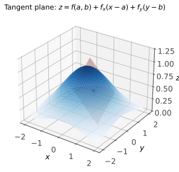
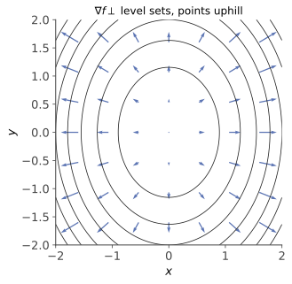

本页目录
数分 V · 多元微分学
一元到多元，三件事发生了质变：极限有了无穷多个逼近方向、"可微"与"偏导存在"分了家、极值判别从符号升级为矩阵的正定性。本页是四年数学里与机器学习重叠度最高的一页——梯度、Hessian、Lagrange 乘数法全部诞生于此。
学习层：三种“导数”都算出来了，为什么仍可能不可微？
1. 具体谜题：先分清方向读数与邻域线性化
在机器学习、几何和方程组里，下面三个对象经常被统称为“导数”，但它们回答的量词不同：标量函数的梯度给出一个线性主部，向量值映射的 Jacobian 把输入扰动送到输出扰动，单个方向导数只沿一条射线读斜率。真正的 Frechet 可微性要求存在同一个线性映射 \(L\)，使
也就是余项对整个小球统一为高阶，而不是“我试过若干条线都没问题”。对标量函数，若 \(f\) Frechet 可微，则 \(Lh=\nabla f(a)^\top h\)；对 \(F:\mathbb R^n\to\mathbb R^m\)，\(Lh=J_F(a)h\)。
2. 先预测：三道判断先写在纸上
- 对光滑二次函数，\(\nabla f(a)\cdot u\) 与有限步长商 \([f(a+hu)-f(a)]/h\) 是否对每个固定的 \(h\) 都完全相等？
- \(f(x,y)=\dfrac{x^3y}{x^6+y^2}\) 在原点的所有直线方向导数都存在且为 \(0\)，这是否足以推出 Frechet 可微？
- \(\det J_F(0)=0\) 是否自动意味着 \(F\) 在原点附近没有局部逆？
实验揭示前只接受这三项预测。揭示后的有限 \(h\)、有限方向网格和有限路径表都是诊断证据，不能替代 Frechet 定义中的极限量词，也不能把一次数值秩判定冒充一般定理。
3. 最小模型：梯度和 Jacobian 各自负责什么？
先取
在点 \(a\) 沿单位向量 \(u\) 的方向导数为
有限差分只是在选定 \(h\) 后对这个极限的近似；二次函数的余项是 \(O(h^2)\)，所以小 \(h\) 通常看起来很准，但“看起来很准”仍是诊断，不是证明。若 \(F=(F_1,F_2)\)，则
在 \(F\) 于邻域内 \(C^1\) 时成立。梯度是 \(m=1\) 的 Jacobian 转置；方向导数是把这个线性映射喂给一个方向，而不是另一个更弱的“可微”定义。
4. 反例账本：所有直线都安静，弯曲路径却暴露失败
对
沿任意固定方向 \((a,b)\) 代入 \((ta,tb)\) 后，若 \(b\ne0\)，有 \(g(ta,tb)/t= t\,a^3b/(t^4a^6+b^2)\to0\)；若 \(b=0\)，差商恒为 \(0\)。所以所有方向导数都存在并等于 \(0\)，偏导也都为 \(0\)。但沿曲线 \(y=x^3\)，有 \(g(x,x^3)=1/2\)；函数甚至不连续。由于 Frechet 可微必然连续，故它不可 Frechet 可微。这不是“某个方向采样太少”的偶然，而是直线量词与整个邻域量词不同。
5. 奇异 Jacobian：逆函数定理撤销证书，不替你完成分类
逆函数定理的假设是 \(F\) 在邻域内 \(C^1\) 且 \(\det J_F(a)\ne0\)。在此条件下，确有局部 \(C^1\) 逆，且 \(J_{F^{-1}}(F(a))=J_F(a)^{-1}\)。条件失败时只能说本定理不再发证书：
- \(F_{\mathrm{fold}}(x,y)=(x^2,y)\) 在原点的 Jacobian 为 \(\operatorname{diag}(0,1)\)；\((x,y)\) 与 \((-x,y)\) 被合并，故原点附近没有一一对应的局部逆。
- \(F_{\mathrm{cusp}}(x,y)=(x,y^3)\) 的 Jacobian 同样在原点奇异，但它仍是一一对应；逆为 \((u,v)\mapsto(u,\sqrt[3]{v})\)，在原点不 \(C^1\)。所以“奇异”既不等于“没有逆”，也不等于“逆仍可微”。
6. 动手揭示：把理论层与有限诊断并排看
下面的实验切换光滑标量函数、全方向反例和两个奇异向量映射。光滑模型显示梯度方向与有限差分的逼近；反例显示直线方向商与 \(y=x^2\) 路径的余项比；奇异模型显示 \(J(0)\)、行列式、秩与明确的逆函数边界。改变 \(h\) 只能改变诊断分辨率，不能把有限网格升级为证明。
无 JavaScript 时的静态读法：默认光滑模型取 \(a=(0.8,-0.5)\)、方向角 \(35^\circ\)、\(h=0.02\)。光滑模型的梯度为 \((1.1,-1.2)\)，所以 \(D_uf(a)\approx0.213\)；有限商应接近它但不必相等。反例在原点的所有直线方向导数为 \(0\)，而沿 \(y=x^3\) 的函数值恒为 \(1/2\)，余项比 \(|g|/\sqrt{x^2+x^6}\to\infty\)。\(F_{\mathrm{fold}}\) 的 \(J(0)=\begin{pmatrix}0&0\\0&1\end{pmatrix}\)，\(F_{\mathrm{cusp}}\) 的 \(J(0)=\begin{pmatrix}1&0\\0&0\end{pmatrix}\)；二者都只说明逆函数定理不能直接套用。
| 账本 | 模型内结论 | 有限实验能说明什么 | 不能越界成什么 |
|---|---|---|---|
| 梯度 / 方向导数 | \(D_uf=\nabla f\cdot u\)（光滑模型） | 当前 \(h\) 的差商是否靠近该值 | 不能凭一个 \(h\) 证明极限 |
| 所有直线方向 | \(g\) 的方向导数全为 \(0\) | 采样方向上的商很小 | 不能推出 Frechet 可微 |
| Jacobian 行列式 | 非奇异时逆函数定理发证书 | 当前点的数值秩/行列式 | 奇异不自动推出无逆 |
| 弯曲路径 | \(g(x,x^2)=1/2\) 使连续性失败 | 一条明确反例路径 | 不能用有限路径证明一般正则性 |
7. 定理假设与失败边界
- Frechet 层：可微要求一个线性主部和全邻域的 \(o(\|h\|)\) 余项；存在偏导、存在所有方向导数、甚至方向导数拼成一个候选线性式，都还不够。若导数在邻域连续，则可微是一个常用充分条件，但不是必要条件。
- 逆函数层：\(C^1\) 邻域正则性与 \(\det J\ne0\) 是逆函数定理的局部假设；奇异点需要研究单射性、逆的连续性/Holder 性/可微性等额外问题。
- 诊断层：浮点秩、有限差分、有限方向网格和有限 SVG 曲线都依赖容差、步长、采样范围；它们帮助找反例或检查公式，不承担定理证明。
- 模型层：实验只使用二维显式函数；在高维、非光滑函数、约束域或带噪测量中，梯度/Jacobian 的存在和可计算性需要另行验证。
1. 多元极限与连续
定义 \(\lim\limits_{(x,y)\to(x_0,y_0)} f = A\)：\(\forall\varepsilon\,\exists\delta\)，\(0 < \|(x,y)-(x_0,y_0)\| < \delta \Rightarrow |f - A| < \varepsilon\)——要求沿一切路径逼近结果一致。
杀手锏（证不存在）：找两条路径极限不同。例：\(f = \dfrac{xy}{x^2+y^2}\) 沿 \(y = kx\) 得 \(\frac{k}{1+k^2}\) 随 \(k\) 变——极限不存在。注意：沿所有直线极限存在且相等仍不保证极限存在（\(\frac{x^2 y}{x^4 + y^2}\) 沿抛物线 \(y = x^2\) 露馅）——路径要多刁钻有多刁钻。
累次极限与重极限：互不蕴含；两者都存在时必相等（用于反证）。
2. 偏导数、全微分与可微性

偏导数 \(f_x(x_0,y_0) = \lim\limits_{h\to0}\frac{f(x_0+h, y_0) - f(x_0,y_0)}{h}\)：固定其余变量的一元导数。
定义（可微） \(\Delta f = A\Delta x + B\Delta y + o(\rho)\)，\(\rho = \sqrt{\Delta x^2 + \Delta y^2}\)——能被线性函数逼近才叫可微（数分 II 的视角在此成为本体），此时全微分 \(df = f_x dx + f_y dy\)。
关系图（考点核心，反例都要能举）：
- 偏导存在 \(\nRightarrow\) 连续（\(\frac{xy}{x^2+y^2}\) 在原点偏导都是 0，却不连续——偏导只管坐标轴方向）；
- 可微 \(\nRightarrow\) 偏导连续（\((x^2+y^2)\sin\frac{1}{x^2+y^2}\)）；
- 一切箭头均不可逆。
高阶偏导：Clairaut/Schwarz 定理——\(f_{xy}, f_{yx}\) 连续 ⇒ \(f_{xy} = f_{yx}\)（混合偏导可换序；不连续时有反例）。
链式法则（多元核心技术）：\(z = f(u, v),\ u = u(x,y),\ v = v(x,y)\)：
——"沿每条依赖路径求导再相加"。🔗 这正是反向传播的数学本体（ai 课 04 讲的四个方程就是它的矩阵化组织）。
3. 梯度与方向导数

方向导数（单位向量 \(\ell\) 方向的变化率）：\(f\) 可微时 \(\dfrac{\partial f}{\partial \ell} = \nabla f \cdot \ell\)，其中梯度
由 Cauchy–Schwarz，\(\frac{\partial f}{\partial \ell} = \|\nabla f\|\cos\theta\)：梯度方向是增长最快的方向，模长是最大变化率；负梯度方向下降最快——🔗 梯度下降（ai 课 04 讲）的全部几何依据就这一行。梯度垂直于等值线/等值面（沿等值面方向导数为零）。
4. 隐函数定理与反函数定理
定理（隐函数） \(F(x, y)\) 在 \((x_0, y_0)\) 邻域连续可微，\(F(x_0,y_0) = 0\) 且 \(F_y(x_0, y_0) \neq 0\)，则方程 \(F = 0\) 在该点附近唯一确定连续可微的 \(y = y(x)\)，且
多变量/方程组版本：标准充分条件换成 Jacobi 行列式 \(\det\frac{\partial(F_1,\dots,F_m)}{\partial(y_1,\dots,y_m)} \neq 0\)。读法：Jacobi 矩阵可逆时，定理保证 \(m\) 个方程能在局部唯一解出这 \(m\) 个变量；矩阵奇异时只是该证书失效，某些方程仍可能以较低正则性或其他结构解出。反函数定理是其特例：\(\det Jf(x_0) \neq 0 \Rightarrow f\) 局部可逆且 \(J(f^{-1}) = (Jf)^{-1}\)。
（🔗 归一化流、变量替换公式（数分 VI）、以及一切"坐标变换合法性"的判据都是 Jacobi 行列式。）
5. 多元 Taylor 与极值
二阶 Taylor（矩阵形式，机器学习通用写法）：
无条件极值：必要条件 \(\nabla f(x_0) = 0\)（驻点）。充分判别看 Hessian（由二阶 Taylor：驻点处 \(\Delta f \approx \frac12 h^\top H h\)，符号由 \(H\) 的定性决定——与高代 VI 二次型正定性在此会师）：
| \(H(x_0)\) | 结论 |
|---|---|
| 正定 | 严格极小 |
| 负定 | 严格极大 |
| 不定 | 鞍点 |
| 半定 | 失效，需更高阶信息 |
二元情形的老写法 \(AC - B^2 > 0\) 且 \(A > 0\) ⇒ 极小，即为 \(2\times2\) 正定判别（顺序主子式）。🔗 深度学习损失面上鞍点远多于局部极小（高维随机对称矩阵特征值同号概率指数小）——ai 课 04 讲"SGD 逃鞍点"的背景数学。
条件极值（Lagrange 乘数法）：求 \(f\) 在约束 \(g(x) = 0\) 上的极值 ⇒ 解
几何直觉：极值点处 \(f\) 的等值面与约束面相切，两梯度共线（否则沿约束面还能移动使 \(f\) 变化）。多约束版本 \(\nabla f = \sum_i \lambda_i \nabla g_i\)。流程：建 Lagrange 函数 \(L = f - \lambda g\) → 求驻点 → 与边界/端点比较定最值。🔗 SVM 对偶（ai 课 02 讲）、熵最大化、以及运筹页的 KKT 条件都是它的直系后代——这是本科数学通往现代优化的正门。
6. 典型例题
例 1（可微性判定） \(f(x,y) = \sqrt{|xy|}\) 在原点：偏导 \(f_x(0,0) = f_y(0,0) = 0\) 存在；若可微则 \(\Delta f = o(\rho)\)，但沿 \(y = x\)：\(\frac{|x|}{\sqrt2 |x|} = \frac{1}{\sqrt2} \not\to 0\)，故不可微。（标准流程：先求偏导、再验 \(\frac{\Delta f - f_x\Delta x - f_y \Delta y}{\rho} \to 0\)。）
例 2（Lagrange 乘数法） 求原点到曲面 \(z^2 = xy + 4\) 的最短距离。 解：最小化 \(f = x^2 + y^2 + z^2\)，约束 \(g = xy + 4 - z^2 = 0\)。方程组：\(2x = \lambda y,\ 2y = \lambda x,\ 2z = -2\lambda z,\ g = 0\)。由前两式 \(x^2 = y^2\)；若 \(z \neq 0\) 则 \(\lambda = -1\) 得 \(x = -y\)… 逐支求解得候选点 \((0, 0, \pm2)\)，\(f = 4\)，最短距离 \(= 2\)。
例 3（隐函数求导） \(\sin z = xyz\) 确定 \(z(x,y)\)，求 \(\frac{\partial z}{\partial x}\)。 解：\(F = \sin z - xyz\)，\(\frac{\partial z}{\partial x} = -\frac{F_x}{F_z} = \frac{yz}{\cos z - xy}\)（\(\cos z \neq xy\) 处成立——隐函数定理的条件不是装饰）。\(\blacksquare\)
下一页：多元积分学——重积分、曲线曲面积分，以及把它们全部统一起来的三大公式。